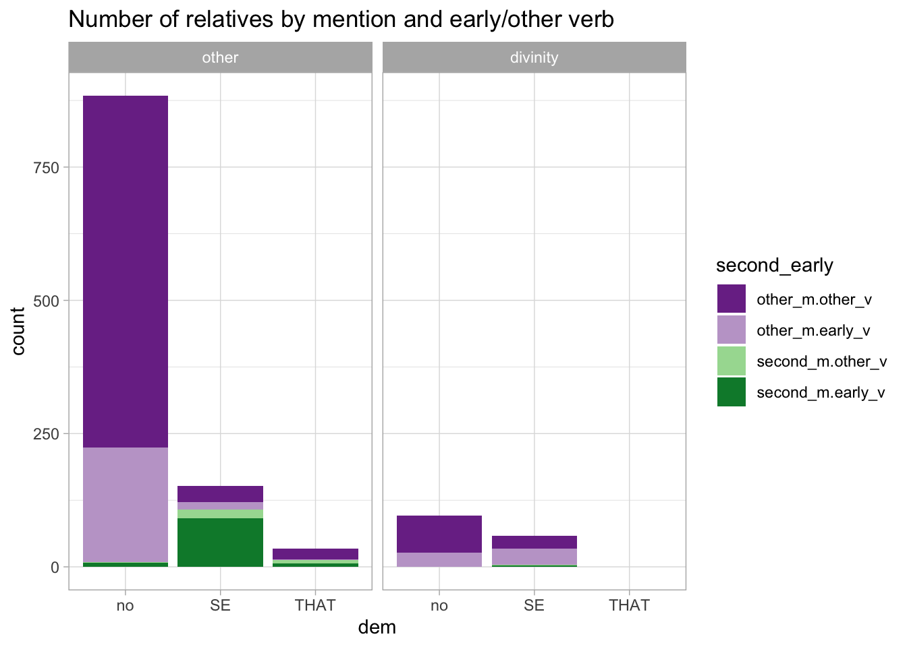
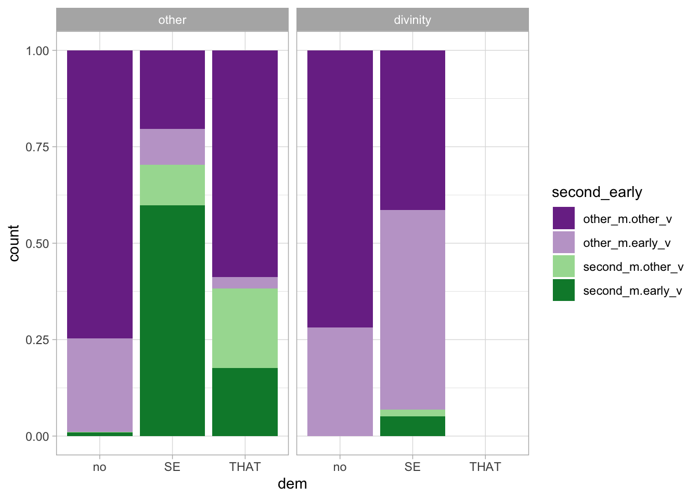
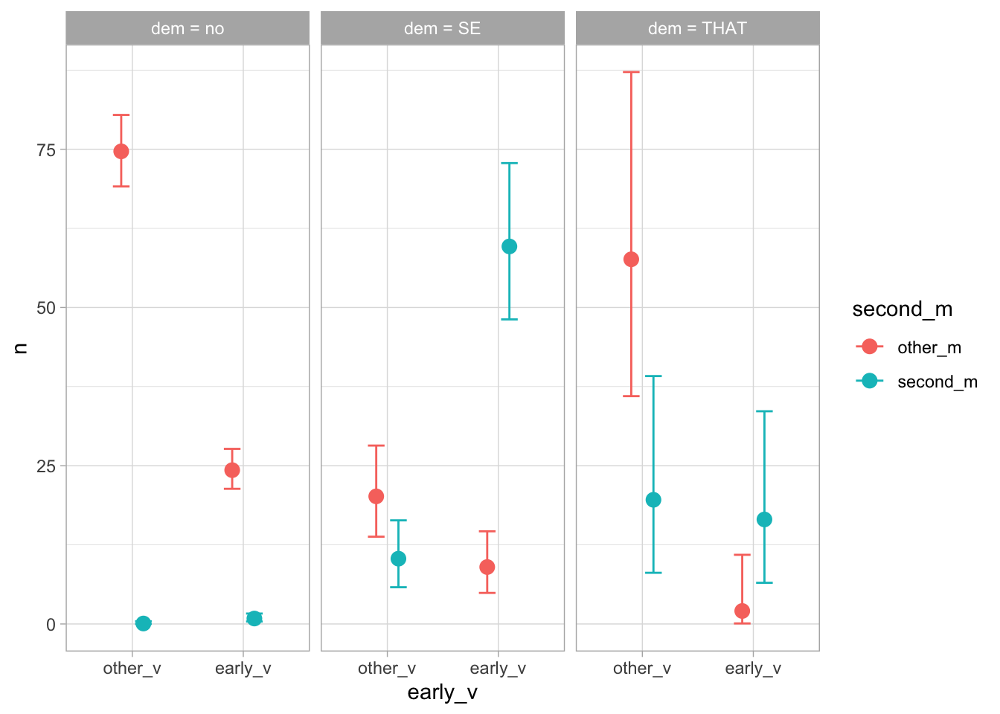

relatives <- read_xlsx("data/Relatives.xlsx") %>%
# Remove observations to be excluded
filter(include == "y")
colnames(relatives) <- c("text", "file", "parallel_set", "parallel_set_id", "dem", "second_m", "include", "early_v", "correlative", "the", "divinity", "generic", "be")
relatives <- relatives %>%
add_count(dem, divinity, name = "grand_tot") %>%
mutate(
dem = recode_factor(dem, n = "no", se = "SE", that = "THAT"),
second_m = recode_factor(second_m, n = "other_m", y = "second_m"),
early_v = recode_factor(early_v, n = "other_v", y = "early_v"),
divinity = recode_factor(divinity, n = "other", y = "divinity"),
second_early = interaction(second_m, early_v, lex.order = TRUE)
)
relatives_counts <- relatives %>%
filter(divinity == "other") %>%
count(dem, second_m, early_v, grand_tot) %>%
drop_na()Analysis
Read data
# Number of rows and columns
dim(relatives)[1] 1227 15Plotting
relatives %>%
drop_na() %>%
ggplot(aes(dem, fill = second_early)) +
geom_bar() +
facet_grid(~ divinity) +
scale_fill_brewer(palette = "PRGn")
relatives %>%
drop_na() %>%
ggplot(aes(dem, fill = second_early)) +
geom_bar(position = "fill") +
facet_grid(~ divinity) +
scale_fill_brewer(palette = "PRGn")
Modelling
rel_bm <- brm(
n ~
dem * second_m * early_v +
offset(log(grand_tot/100)),
data = relatives_counts,
family = poisson,
backend = "cmdstanr",
cores = 4,
threads = threading(4),
file = "data/rel_bm"
)
rel_bm Family: poisson
Links: mu = log
Formula: n ~ dem * second_m * early_v + offset(log(grand_tot/100))
Data: relatives_counts (Number of observations: 12)
Draws: 4 chains, each with iter = 2000; warmup = 1000; thin = 1;
total post-warmup draws = 4000
Population-Level Effects:
Estimate Est.Error l-95% CI u-95% CI
Intercept 4.31 0.04 4.24 4.39
demSE -1.32 0.19 -1.70 -0.97
demTHAT -0.26 0.23 -0.72 0.16
second_msecond_m -7.09 1.31 -10.22 -5.17
early_vearly_v -1.12 0.08 -1.28 -0.98
demSE:second_msecond_m 6.41 1.35 4.38 9.59
demTHAT:second_msecond_m 5.99 1.40 3.78 9.30
demSE:early_vearly_v 0.31 0.35 -0.42 0.95
demTHAT:early_vearly_v -2.40 1.27 -5.42 -0.45
second_msecond_m:early_vearly_v 3.73 1.36 1.66 6.98
demSE:second_msecond_m:early_vearly_v -1.15 1.45 -4.52 1.13
demTHAT:second_msecond_m:early_vearly_v -0.37 1.97 -4.47 3.51
Rhat Bulk_ESS Tail_ESS
Intercept 1.00 3658 3575
demSE 1.00 3077 2396
demTHAT 1.00 3271 2602
second_msecond_m 1.01 790 642
early_vearly_v 1.00 3665 2866
demSE:second_msecond_m 1.01 846 668
demTHAT:second_msecond_m 1.01 918 706
demSE:early_vearly_v 1.00 2754 2461
demTHAT:early_vearly_v 1.00 1754 1339
second_msecond_m:early_vearly_v 1.01 858 685
demSE:second_msecond_m:early_vearly_v 1.00 900 672
demTHAT:second_msecond_m:early_vearly_v 1.00 1019 873
Draws were sampled using sample(hmc). For each parameter, Bulk_ESS
and Tail_ESS are effective sample size measures, and Rhat is the potential
scale reduction factor on split chains (at convergence, Rhat = 1).conds <- make_conditions(relatives_counts, c("dem")) %>%
mutate(grand_tot = 100)
conditional_effects(rel_bm, effects = "early_v:second_m", conditions = conds)